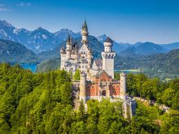
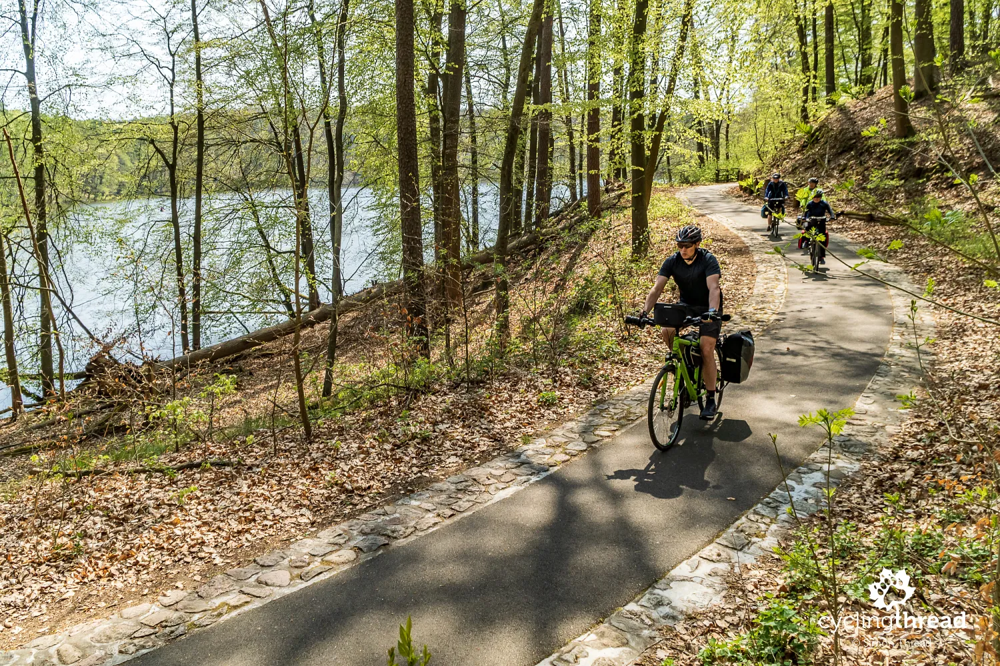

Top three activities to do in Germany

Discover
Germany is a top global travel destination (third-largest market in 2023) offering a mix of vibrant cities, rich history, and scenic landscapes, attracting millions annually.
Relish
German cuisine is hearty, regional, and heavily centered on bread, potatoes, and high-quality meats like pork, beef, and sausage.

Cycle
Germany is a premier cycling destination, offering over 70,000 km of marked routes and extensive infrastructure connecting scenic landscapes, historic cities, and river valleys.